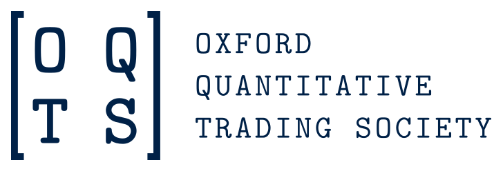
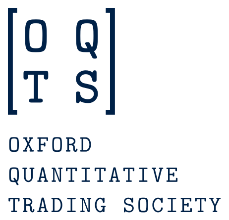
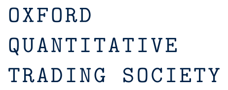
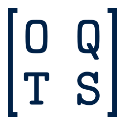
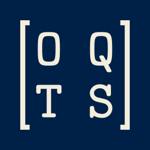
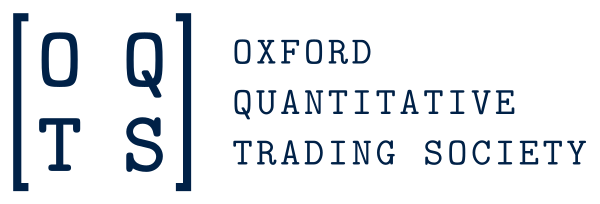
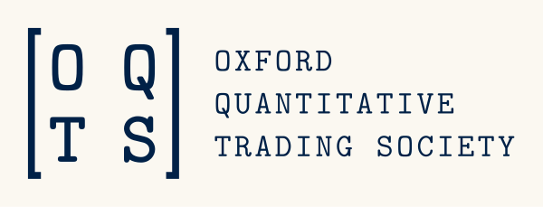

Brand system v1.1
Every asset, every mode,
every use case.
This page is the visual counterpart to brand.md. The doc
explains and specifies; this shows. Anything the brand permits has an example here.
There is one ground — ivory — with oxford used as a band inside it, never as a second theme.
§1
The mark and its lockups
A 2×2 matrix whose entries are the initials, set in Latin Modern Mono inside drawn brackets. It reads as a matrix — the society's own subject — and as a monogram. Always monochrome; the accent never enters it.
Horizontal lockup — the primary

Stacked, wordmark, mark, favicon




Transparent or baked — pick by whether you control the surface


-on-ivory — baked, so the host's background cannot interfere
Transparent files are the primaries and right whenever you set the background yourself. Everywhere else — Word, PowerPoint, Keynote, Slack, email — use a baked file. Every SVG has a PNG at 1×/2×/3×, and the baked PNGs carry no alpha channel at all, so nothing downstream can composite them wrongly.
Size ladder — and where it stops
Latin Modern's strokes are fine, so the lockup stops at 180px wide and the mark at 48px. Below 32px the letters are illegible at any weight, which is why the entries collapse to dots rather than shrinking further.
What not to do
§2
Two grounds, one accent
Ivory carries the page and oxford answers it; paper drops back to a tint for panels. Every value below is measured, not chosen — the number under each swatch is its contrast against ivory.
The accent splits by job
Bronze — accent text
4.8:1 on ivory. Every eyebrow, small-caps label and link hover on a light ground uses this. It is the only gold that passes for type.
Camel — accent rules
2.9:1 on ivory — below the floor at any size, so it never carries type. It draws the closing double rule above, and nothing else. Reversed on oxford the constraint disappears and gold text is fine.
§3
Latin Modern leads, STIX carries
The mono is the voice — masthead, headings, eyebrows, every number. The serif does the reading. Hierarchy in the display column comes from size and tracking, never weight, because Latin Modern has no weight ramp to give.
§4
A 4px grid
Steps 1–4 work inside a component, 5–7 between components, 8–10 between sections. Reach for a step, never a number.
§5
Components
The pieces every page is assembled from. Each one is built only from the tokens above, so all of it follows the theme.
The bracketed block
Abstract
The logo's bracket, reused as a content frame. It is the brand's one structural signature and marks a passage that stands apart — an abstract, a pull quote, a statement of terms. Never decorative, never more than once on a page.
The closing rule
In ledger typography a double rule under a column means the total — this account is settled. It closes a section or a table, and does nothing else.
Hairline
A single chalk rule opens a section or separates rows.
Actions
A control says exactly what happens when it is used, and keeps the same name through the whole flow.
Form field
Status
Status colour never travels alone — always an icon and a word, because two of these four sit below 3:1 on ivory by design.
Table with a closing total
| Team | Sharpe | Max DD | Return |
|---|---|---|---|
| Ornstein | 2.41 | −4.8% | +18.2% |
| Kelly Criterion | 2.06 | −6.1% | +16.9% |
| Basis Risk | 1.88 | −5.4% | +12.4% |
| Field median | 1.34 | −8.2% | +7.6% |
Numbers are Latin Modern and monospaced, so columns align without effort. The double rule marks the total.
§6
Charts
The most brand-critical thing the society produces. Every colour here came out of a validator, not out of taste. These examples are built from the tokens directly, so a chart can never drift from the palette.
Diverging in a table — monthly returns
The commonest place these two hues will actually appear. Cells are tinted by magnitude using the diverging hues composited over ivory, so the ink stays at 6:1 or better on every cell — a full-strength fill would fail. Every value keeps its sign. That is not decoration: non-corresponding steps measure ΔE 4.3, so a reader with red-green deficiency is reading the number, not the colour. Figures are placeholders.
§7
Photography
Full colour under a grading rule rather than a filter. The society has to look like a real community, which duotone and monochrome both undercut — the price is that the rule must actually be enforced. Frames below stand in for photographs.
3:2 landscape
4:5 portrait
The rule
Natural light, no flash, no filters, no vignettes. Neutral white balance — a warm or blue cast is the commonest way a set stops looking like one set. Plain or architectural backgrounds. Eye level for people. Grade the set together, never image by image, and give every headshot the same framing.
The escape hatch
If a photograph cannot be graded into the set, do not use it. A figure or a type-led card is always better than one off-brand image. This is the clause that stops the site drifting once other people start uploading, and it is the only part of the imagery rule that really matters.